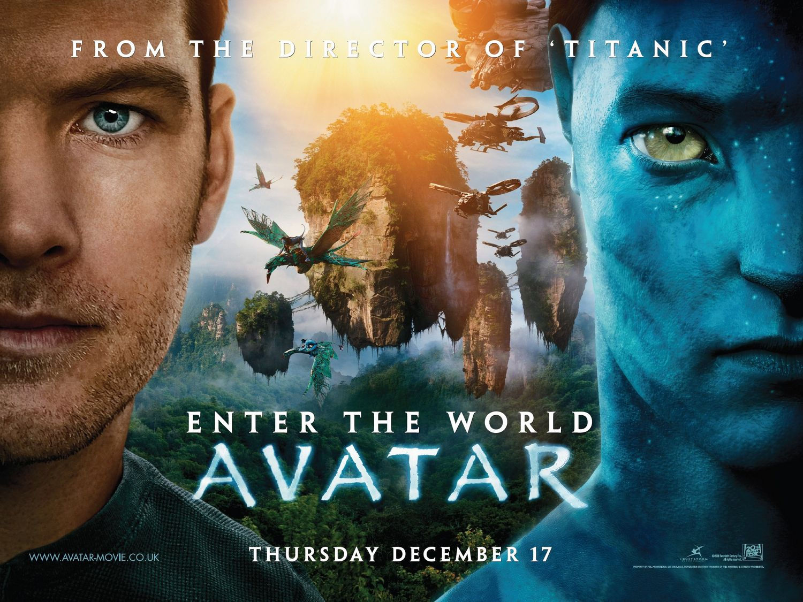

AVATAR
| ROLE | DETAILS |
|---|---|
| Main Actors | Zoe Saldana, Sam Worthington, Stephen Lang |
| Director | James Cameron |
| Age Restriction | +13 years |
| Showing Time | 19h:00 |
BRIEF SYNOPSIS
On the lush alien world of Pandora live the Na'vi, beings who appear primitive but are highly evolved. Because the planet's environment is poisonous, human/Na'vi hybrids, called Avatars, must link to human minds to allow for free movement on Pandora. Jake Sully (Sam Worthington), a paralyzed former Marine, becomes mobile again through one such Avatar and falls in love with a Na'vi woman (Zoe Saldana). As a bond with her grows, he is drawn into a battle for the survival of her world.